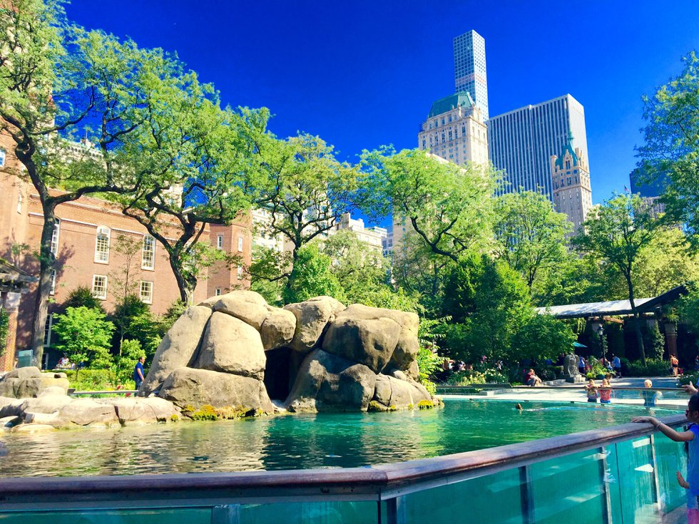
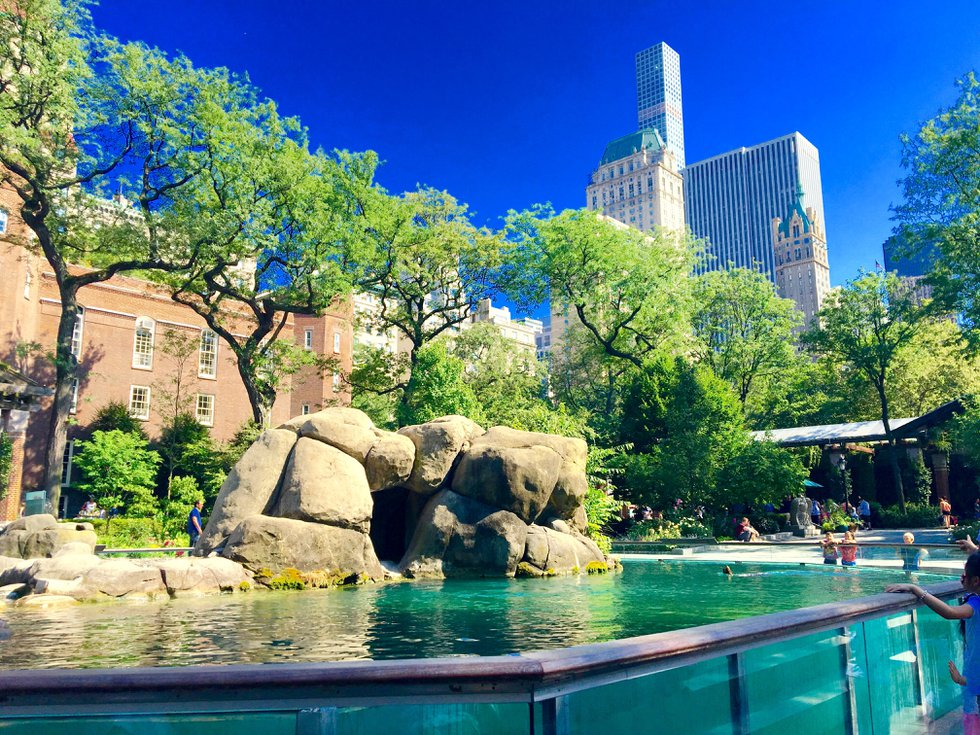

Lieux à visiter
Central Park
Histoire et Nature : Un poumon vert au cœur de Manhattan : Central Park, surnommé le poumon vert de la ville, s’étend sur plus de 340 hectares. C’est un espace de détente et de nature au milieu des gratte-ciels impressionnants de New York. Des lacs et des étangs pittoresques : Les visiteurs peuvent se promener autour des trois lacs du parc, dont le Great Lawn et le Sheep Meadow, offrant une vue imprenable sur les buildings de Manhattan en toile de fond1. Le Belvédère Castle : Ce château médiéval reproduit en plein cœur de New York offre une vue spectaculaire sur l’étang des tortues en contrebas, le parc et les immeubles de l’Upper East Side2. Des statues et des monuments : Central Park abrite de nombreuses statues, dont certaines célèbres comme celle de John Lennon. Explorez ces œuvres d’art disséminées dans le parc. Des activités variées : Louez des vélos pour explorer le parc, visitez le zoo de Central Park, flânez dans les prairies, ou profitez simplement d’une journée en plein air dans ce havre de verdure3. Des saisons changeantes : Chaque saison transforme Central Park. L’automne, avec ses couleurs chatoyantes, est particulièrement magnifique. N’hésitez pas à revenir à différentes périodes de l’année pour découvrir ses visages variés4. Columbus Circle : Avant d’entrer dans le parc, faites un tour à Columbus Circle, un point de départ idéal pour votre exploration. En somme, Central Park est bien plus qu’un simple parc. C’est un lieu où la nature, l’art et l’histoire se rencontrent, offrant aux visiteurs une expérience unique à New York ! 🌳🗽 🌟
 

.jpeg)
Musée américain d'histoire naturelle
La plus grande collection au monde : L’American Museum of Natural History est le plus grand musée d’histoire naturelle au monde, abritant une collection de plus de 32 millions d’objets. Des spécimens marins, terrestres et même venus de l’espace y sont exposés. L’évolution des vertébrés : Dès l’entrée, les visiteurs sont accueillis par le squelette impressionnant d’un apatosaure (un dinosaure pesant près de 30 tonnes) en train de défendre son petit contre un allosaure. Tout un étage est consacré à l’évolution des vertébrés, avec de nombreux autres squelettes de dinosaures. La reconstitution d’une baleine bleue : Dans le hall des océans, une baleine bleue grandeur nature suspendue dans les airs laisse sans voix. C’est un spectacle à ne pas manquer. Les collections anthropologiques : Explorez les mystères de la civilisation inca, découvrez les Indiens d’Amérique et admirez le spectaculaire calendrier inca. Le célèbre Star of India, le plus gros saphir bleu au monde (563 carats), est également exposé. Le Rose Center for Earth and Space : Depuis l’an 2000, le musée a ouvert ce bâtiment entièrement tourné vers le ciel et l’espace. Vous pourrez revivre le célèbre Big Bang dans le planétarium et écouter les commentaires enregistrés par Whoopi Goldberg. La bibliothèque du musée : Elle contient près de 500 000 ouvrages. À proximité, visitez le Rose Center for Earth and Space. Informations pratiques : Adresse : À l’angle de Central Park West et de la 79th Street, dans l’Upper West Side. Horaires : Ouvert tous les jours de 10h à 17h45. Tarifs : 28 pourlesadultes,22 pour les plus de 65 ans et les étudiants, 16 $ pour les enfants de 2 à 12 ans1. En somme, le Musée américain d’histoire naturelle est un lieu fascinant où la vie, l’évolution et l’univers se dévoilent sous un jour captivant ! 🌎🦕 🌟
.jpeg)
.jpeg)
.jpeg)